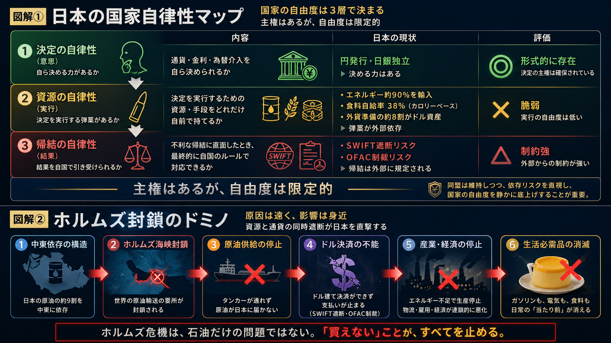
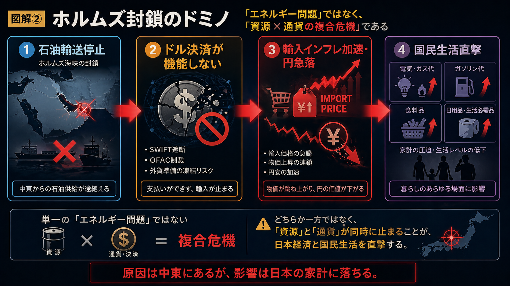

ホルムズ海峡が封鎖されたとき、日本は何を失うか。多くの人は「石油」と答える。しかし本当の問いはその先にある。石油を買う代金を、日本は自分で用意できるのか。
ホルムズリスクに関する記事を何本か書いてきた。エネルギー輸送の遮断、日本への影響、中東情勢の推移。しかし一つ、書かなかった論点がある。通貨である。正確に言えば、書けなかった。自分のカバーしてきたエリアから外れ、内容が専門的、技術的すぎるという理由からだが、正直なところは「腰が引けていた」のだ。
そして、この腰の引け方こそが、戦後保守言論が通貨領域を丸ごと回避してきた構造そのものだ。言い訳ではない。そうなった背景と仕組みがあったのだ。
2025年以降、事態は変わった。トランプ政権が関税政策のほか、国際送金ネットワークに関する「SWIFT」遮断、米国独自の取引規制である「OFAC」制裁などを外交の道具として露骨に使い始めたからだ。ドルへのアクセスを断つことが、軍事力に匹敵する強制力を持つと世界が実感した。ドル基軸体制は「国際公共財」ではなく、米国の意思決定を全同盟国に強制する装置として機能している。それは、もはや否定できなくなった。
この現実を前に、「ドルへの依存」を直視しないことが対米配慮だった時代は終わりつつある。
日本は円を発行できる。この意味で、形式的な通貨主権は存在する。しかし実態はどうか。
エネルギーの9割超を輸入し、その決済はドル建てで行われる。食料カロリー自給率は38%。外貨準備の8割超が米ドル建て資産だ。つまり、日本が「自国通貨で必要なものを買えるか」という問いへの現実的な答えは、Noに近い。
国家の自律性には三つの層がある。決断できるか、実行できるか、その結果を自分で引き受けられるか——の三つだ。日本は第一層（決断）は持っている。しかし第二層（実行の弾薬）は外部依存であり、第三層（帰結）はSWIFT遮断やOFAC制裁によって外部から規定される。「主権はあるが自由度は限定的」——これが現実の構造だ。

ホルムズ危機はこの断絶を一気に可視化する。石油が止まるだけではない。ドルが使えなければ支払いもできない。資源依存と通貨依存が同時に炸裂するのが、ホルムズ封鎖の本質である。

ではなぜ、この問題は政治の俎上に乗らなかったのか。
安倍政権の「経済安全保障」は、半導体・データ・サプライチェーンを論じた。しかし通貨・決済システムには踏み込まなかった。現在の主要政党の政策文書を見ても、エネルギーや食料の自律性への言及はあるが、通貨・金融システムの自律性は事実上ゼロだ。
理由は三つある。安全保障は政治家が語り、通貨は官僚テクノクラートに委ねるという「思考の分業」が戦後保守に内在化した。プラザ合意（1985年）以後、ドル基軸への統合は「決着済み」として政治議題から消えた。そして、通貨自律性を語れば「反米」と読まれるという外交的自己抑制が働いた。
この三つは誰も口にしない。しかし保守言論者が通貨を回避するときの「腰の引け方」の正体は、この三層の暗黙合意である。私も例外ではなかった。
急進的な脱ドル論を唱えたいわけではない。米国との同盟を軽んじるつもりもない。しかし現実を直視することと、現状に服従することは別だ。
今必要なのは三つだ。第一に、経済安全保障戦略に「通貨・決済安全保障」を明記すること。第二に、外貨準備の凍結や決済網の遮断を想定した有事シミュレーションを政府横断で制度化すること。第三に、デジタル円の設計思想を、金融技術の問題としてではなく国家主権の問題として位置づけること。これらは革命ではない。国家の自由度を静かに底上げする、保守的な補強作業である。
日本が今問われているのは、軍事力の強化と並行して、通貨という「目に見えない主権」を政治の俎上に乗せる意志を持てるか、だ。保守が「国家の自立」を本気で語るなら、その問いから逃げる理由は、もうない。